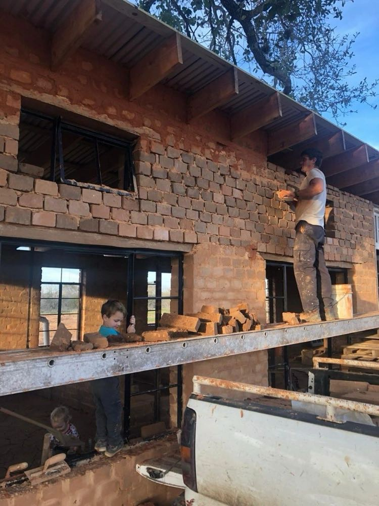
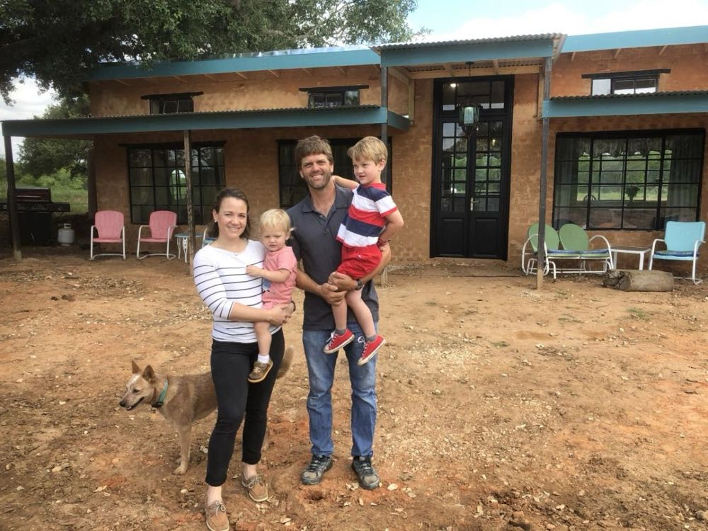
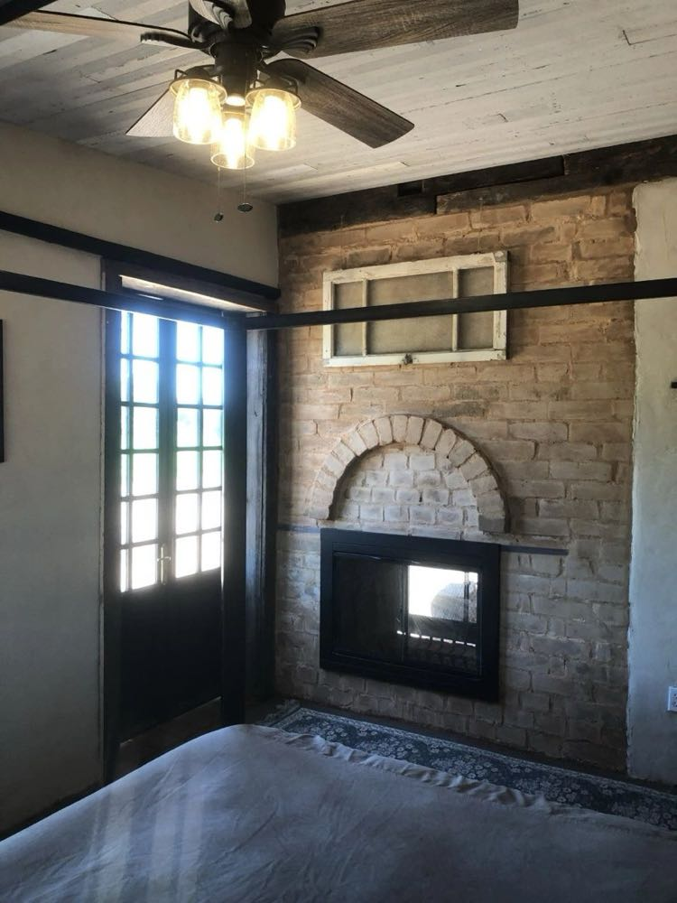
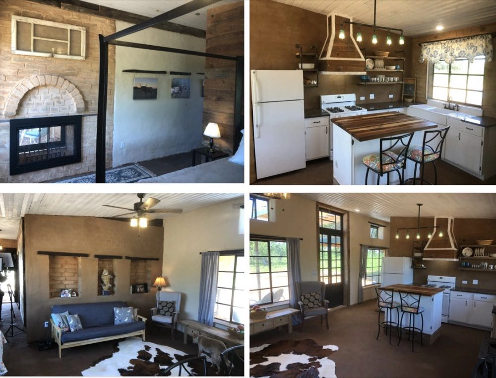
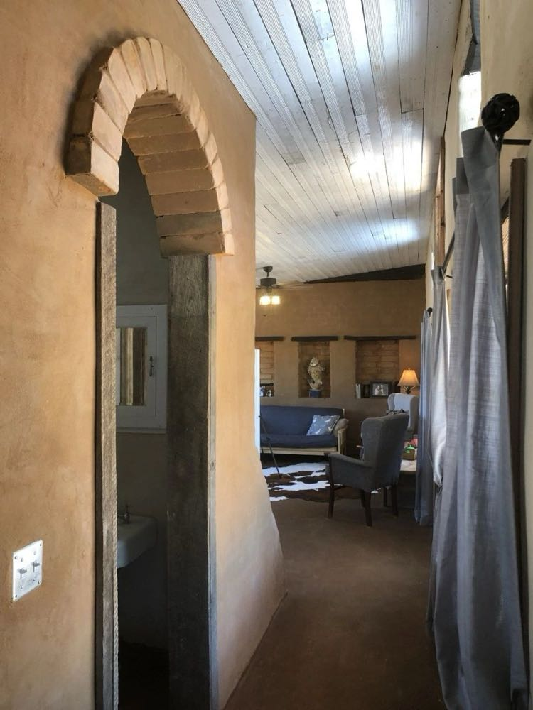
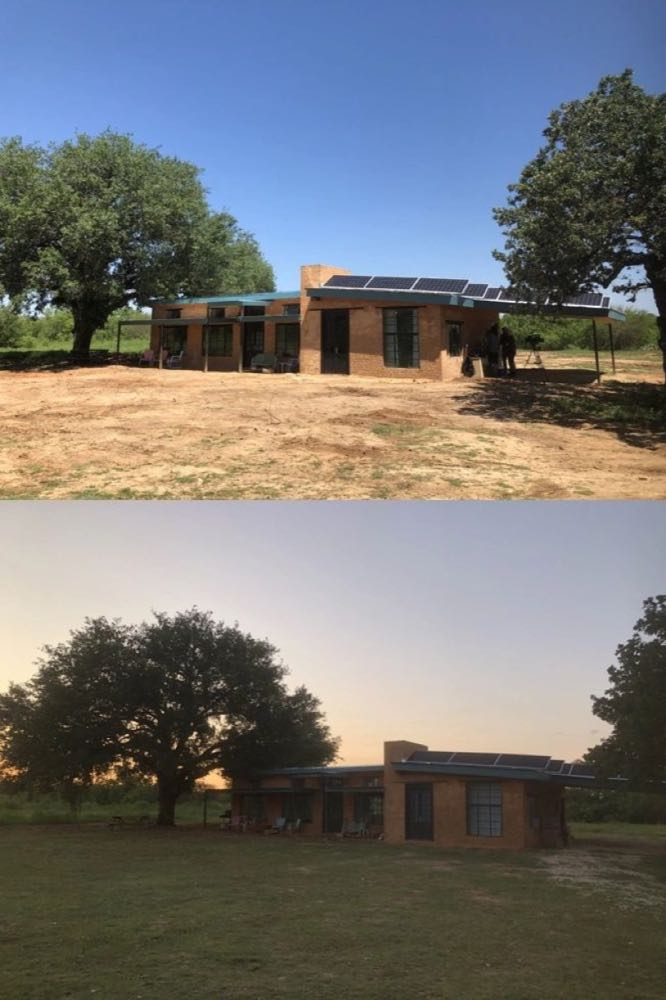

It's been exactly a year since we put the finishing touches on our off-grid CEB home at our property in SE San Antonio and as my wife, Melissa says, "it has settled into nature". Native grass grew around the house and gives a nice green contrast to the red earth blocks. The house is nestled nicely under the huge branches of the 100+ year old live oak tree in the spot we picked out years ago as the eventual build site of our off-grid home. Though we haven't been able to move into the house full time yet (Melissa received 2-year military orders to a base in Alabama soon after we finished it), I at least get to stay in it about one week each month when I come to check in on AECT operations. We also, occasionally, get to stay in it as a family when Melissa has training back in San Antonio.


We love the home and all it has to offer. The earth blocks are so beautiful and inviting...and the house is so comfortable. The boys are always jealous when I facetime them from the "brick house". As many times as I've told them how the third little pig built his house out of earth blocks, it still hasn't sunk in for them I guess :)


We love the fact that we have $0 energy bills in the middle of a San Antonio summer and still stay perfectly comfortable. We love the feel of the natural earthen material all around us and under our feet.

We love the unique architectural features that the CEBs allow, as well.

We love getting to experience our earth block home every time we come back to San Antonio; we can't wait until the day we get to start experiencing it full time as a family!